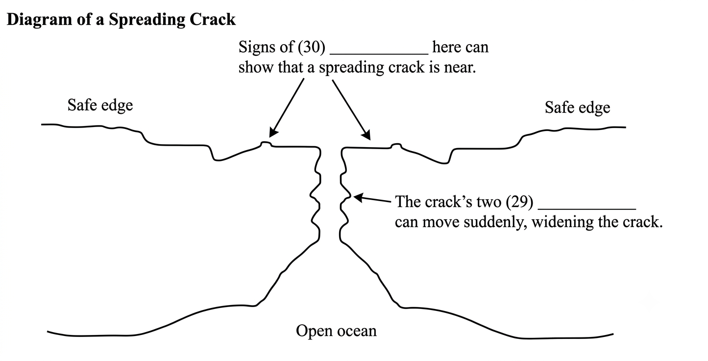

Section 3
Questions 21–25
Complete the sentences below. Write NO MORE THAN TWO WORDS for each answer.
21. When he was young, Amundsen studied a lot of on polar exploration.
22. Although Amundsen studied hard at becoming a doctor, he still worked on his so that he would be a good explorer.
23. Amundsen obtained a so that he would not repeat the mistakes of earlier explorers when captaining a ship.
24. Amundsen ended up being in during his first trip to Antarctica.
25. Amundsen secured for his expedition to find the Northwest Passage by organising to do magnetic research on his trip.
Questions 26–28
Choose the correct letter, A, B or C.
26. Amundsen changed his mind about travelling to the North Pole because:
27. What was the main reason for Amundsen beating Scott to the South Pole?
28. What slowed Amundsen down during his journey to the South Pole?
Questions 29–30
Complete the diagram below. Write NO MORE THAN ONE WORD for each answer.
